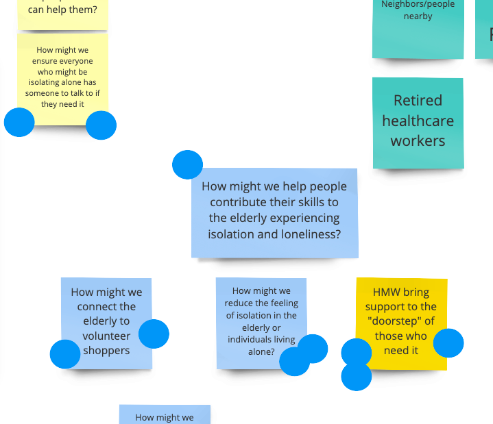
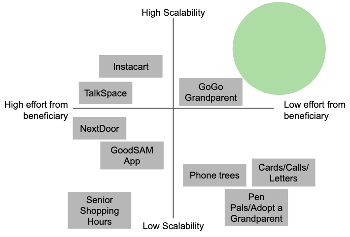

During a pandemic forcing physical isolation, how might we reduce feelings of emotional isolation for the elderly? In a time when we can't walk through another's front door, how might we might we bring support to the "doorstep" of those who need it? For an exercise in quick decision-making, ideating, and prototyping, I worked with two other designers to explore this problem over one weekend in a 48-hour design-a-thon. Our final product, UpLift, connects volunteers with elderly beneficiaries needing help completing errands or tasks.
Three designers, working remotely over 48 hours
UX Research and Design
Storyboards, prototype
To kick off our work, my team brainstormed around COVID-19's effects and implications on various demographic groups in the United States. We explored the psychological and emotional challenges the virus brings (including the extra danger brought to at-risk individuals), as well as its effects on childcare, education, employment, medical staff and essential workers.
FA "How Might We (HMW)" exercise followed by dot-voting helped us scope down to two demographic areas: the isolated elderly (those not living in a long-term care facility), and non-essential workers looking to contribute their skills. The following "HMW" question served as a guide:
How might we help individuals contribute their skills to the otherwise-independent elderly experiencing isolation and loneliness?
What options currently exist for the connecting these two groups of people? We took a few hours to find out. We explored both digital and non-digital options and evaluated them based on the amount of effort they required from elderly beneficiaries and their potential for scalability across circumstances. Rather than considering these metrics from a business perspective, we used them to help guide us to a solution that, if developed, could help the most people.
Our product needed to be sensitive to the needs of elderly beneficiaries while also proving useful for as many skilled volunteers as possible.
Our findings revealed a potential market opportunity for a product that required low effort from beneficiaries and tapped into the "supply pipeline" of skilled volunteers looking to help.
We acknowledged that our work thus far rested on a few assumptions, the most key being:
With the tight time restrictions we were under, we weren't able to conduct robust research with users other than brief interviews within our social circles. However, those conversations, paired with knowledge of the options evaluated above, showed that there was an appetite for connection on the part of both skilled volunteers and elderly beneficiaries and led us to a problem statement: Individuals looking for ways to support isolated seniors need a way to know where and how they can use their skills to help.
Given that we were crafting a volunteer-based service, we wanted to ensure that both the volunteer's experience and the beneficiary's experience received attention. To do so, we sketched a storyboard that incorporated a user flow for each person, and the UpLift product began to take shape as a service where beneficiaries could text in a request for assistance, and helpers would accept the task, complete a safety check, and provide the assistance requested.
In keeping with the opportunity space we identified, we wanted the product to be as straightforward as possible for beneficiaries to use. Beneficiaries with a cell phone are more familiar with its native functionality than they would be with a new app or interface—therefore, beneficiaries can interact with UpLift via text message.
In order to establish an MVP version of UpLift, we crafted a basic set of wireframes to detail the interface helpers would see.
"This fast-paced product design exercise was an excellent experience, but it also came with the caveat of knowing that a product like UpLift would need to address a multitude of questions to reach development and provide value. For starters, designing fail and empty states throughout the app is a necessary precursor to conducting concept and usability tests. Areas to research further in these tests include UpLift's use of the word "tasks" (may be construed as transactional), as well as privacy and vetting concerns.
For V2 or later, attention might be paid as to how users might submit a request on behalf of a beneficiary that might not be willing or able to request one themselves.
I had a great experience with this design exercise. I'm always looking for similar opportunities to refine my skills—if you have a suggestion or question, please contact me.
Toggle dark/light mode